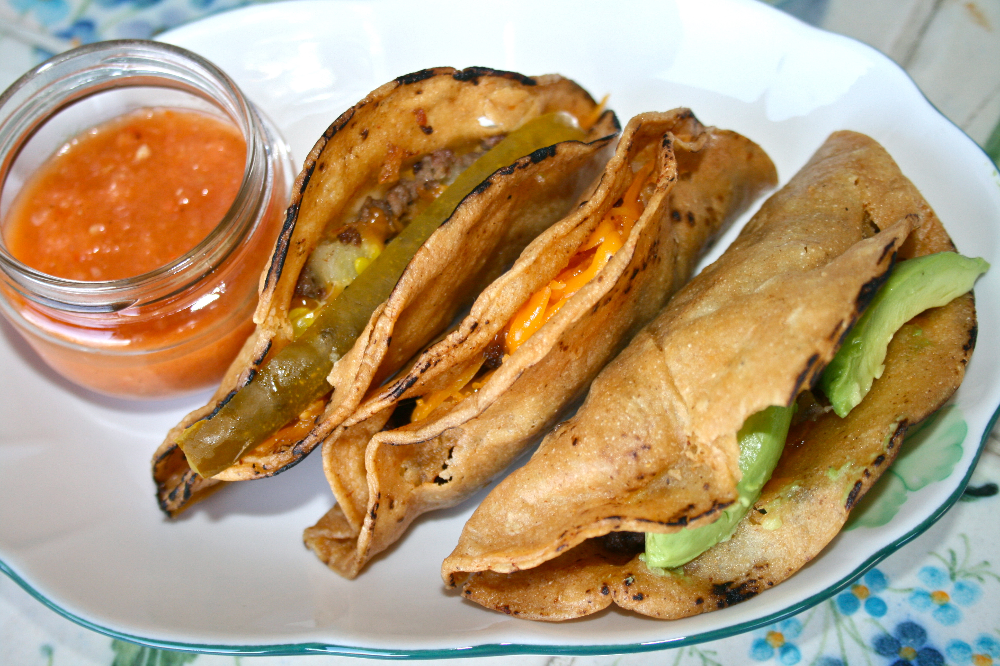

Fried Ground Beef and Potato Tacos

You have never tried homemade Fried Ground Beef and Potato Tacos as delicious as from this recipe!
Pair these tacos with the cauliflower and salsa recipes, and you'll be in heaven!
This recipe should take approximately 1 hour to prepare and cook.
We're keeping it simple and cheap to feed the whole party!
Ingredients
- 2 medium Idaho potatoes (peeled, diced, and boiled)
- 1 Tbsp olive oil
- 3/4 cup diced onion
- 1/2 lbs ground beef
- 1/2 lbs ground pork
- 1 tsp minced garlic
- 1 tsp salt
- 1 tsp black pepper
- 1/2 tsp oregano
- 1/2 tsp ground chipotle pepper
- 15 corn tortillas
- 1 1/2 cups vegetable oil
- toothpicks
Steps
- Fill a medium pot with water to the halfway mark, then place over a medium high flame. Bring to a boil.
- Take your two potatoes and peel and dice them. Boil for 10 minutes. Remove from flame and drain. Set to the side.
- In a large frying pan over a medium flame add olive oil and allow to get hot. Then add onion, and saute for 5 minutes. Mix frequently.
- When onions are translucent, add the ground beef, garlic, salt, black pepper, oregano, and ground chipotle pepper to the pan. Mix well and cook until ground beef turns brown.
- Then add boiled potatoes to the ground beef mixture. Mix well and remove from flame. Place in a bowl to start assembling your tacos.
- Warm your corn tortillas on an open flame for 15 seconds on each side. Then place them in a towel to stay warm or a tortilla holder. This step will keep your tortilla from breaking.
- In a large frying pan over a medium flame add vegetable oil and allow oil to warm while you assemble your tacos.
- Take a warm corn tortilla and fill with 1 1/2 tablespoons ground beef and potato mixture. Place the filling in the middle for easy folding.
- Then fold tortilla over and close taco with a toothpick right in the middle or use two toothpicks along the side. Continue until done with all tortillas.
- Your vegetable oil should be hot by now. Fry your tacos. Let sit about 5 minutes on each side or until gold brown and shell is hard.
- Move cooked tacos to a plate with paper towels to absorb excess oil. Remove toothpick closure, and fill with your favorite toppings.